Most email teams know that typography, imagery, and CTAs can make or break performance. Too often, though, these elements are used without clear rules, leading to low contrast, unreadable fonts, or buttons that fall apart in dark mode and erode trust instead of building it.
In this practical session, Logan Sandrock Baird hosts Jaina Mistry, Mark Robbins, and Paul Airy to unpack the 2025 email design trends and their accessibility impact. From font choice and heading structure to photography, bright CTAs, and rounded modular layouts, the panel shows how design decisions affect comprehension, trust, and results. This is not just a talk about pretty layouts. It is a reminder that every visual choice is a brand and inclusion decision.
Curious how to keep your design fresh without breaking accessibility or trust? Dive in.👇
Logan: Well, hello, Gentles. Thank you all so much for joining us today, for spending an hour in the midst of your busy Wednesdays. This is the 2025 Email Design Trends webinar: What works, what doesn’t, and why. Presented by Really Good Emails and Beefree. We’re delighted to share these things with you and to introduce our amazing panelists. I am Logan Sandrock Baird, Senior Community Evangelist and Community “Momager” for Really Good Emails and Beefree. I’m joined by a powerhouse of panelists. Jaina, I’ll start with you. Introduce yourself, tell us where you’re joining from, and a little bit about what you do.
Jaina: Hello! I’ve always wondered what I’d look like with a Christmas bauble effect—this is really cool. My name’s Jaina Mistry. I have been an email and content marketing strategist for around 20 years now. I feel so old saying that. I spent most of my career at Litmus, and now I’m solo consulting, helping brands and businesses create awesome emails. Excited to dig into design trends today.
Mark: Hey. I’m Mark Robbins, a software engineer currently working at Customer.io. I also work on Parcel.io, doing all kinds of cool email things. I’ve been working in email since 2012. I started getting interested in accessibility around 2015 when I realized all my emails were broken after seeing a conference talk. I thought, "Right, accessibility is important." I’m based in Brighton, UK, but I'm moving to Shoreham soon.
Paul: I’m Paul Airy. I run Beyond the Envelope, specializing in email usability and accessibility. I’ve basically done that my entire career. I started focusing on accessibility just before I gave a talk on it about 10 years ago—it’s actually the anniversary this Sunday. So yes, that’s been my focus: making sure emails work for people, that people can use them and access them. I’m based in Leeds, in Yorkshire, UK.
Logan: Good. Thank you all so much for joining. We wanted a panel that included not only email experts, which you all are, but also experts on accessibility. So why even talk about trends? On their own, they’re not that interesting. It’s good to know what people are doing, but what matters is what we can infer, intuit, and learn when we dig deeper. At Really Good Emails, people submit emails, and we curate the best of the best. Thousands are submitted each year. We looked at the most popular ones—those saved most often into collections—and ran AI analysis to find common design trends and themes, then double-checked the data. That helped us identify what’s emerging. And why frame this through accessibility? My take is simple: good design is accessible design.
Email design is essentially a subset of information design, and information design is successful and effective when people are able to comprehend that information easily. That’s why a good, well-designed email is like air—you don’t notice it. You’re just taking it in because it’s easy to navigate from one thing to the next and to know where you’re supposed to look.
If a whole section of your audience isn’t able to comprehend your email easily, then I’d say the design probably needs to be improved. Do we have any strong feelings or reactions from the panel about that? Am I saying anything shocking or that you highly disagree with?
Jaina: Not shocking. I think it’s just that good design is accessible, which means good email design that is accessible is going to be an email that performs well. Ultimately, that’s what you need: an email that people can read easily and take action on easily. Accessibility is also about performance, and I think we’ll probably get into why that’s important.
Paul: Yeah, I would imagine. I always think design is about solving a problem. In this case, the problem is that we want to send a message to our recipients. If that recipient can’t engage with it, then the brief hasn’t really been met. The problem hasn’t been solved. We can use creativity, and that’s great, but you need a core focus: Is it actually achieving what it’s set out to do?
Logan: Yeah, that makes a lot of sense.
Mark: My background’s in code, and I’ve always been obsessed—well, I still am obsessed—with email rendering and making sure things work and perform well across every client. So if a trend doesn’t work in Outlook but falls back clearly, that’s fine. If it doesn’t work in Yahoo, then it’s broken. Accessibility is the same. If it’s not accessible, it’s broken. That’s why it’s so important. If you’ve got a trend that looks great but doesn’t work when you send it, then what’s the point?
Logan: Yeah. It sounds like we’re all on the same page, which is good to know. That’s why we’re framing this conversation in these terms. We’re going to take a look at the top four design trends of 2025, derived from Really Good Emails data. For each, we’ll discuss what makes them effective, what’s accessible or not accessible about them, and maybe how you could be cheeky and stand out. We’ll also save time for Q&A at the end, though we might answer some questions as we go along. So let’s jump straight into the first trend: the Sans Sage.
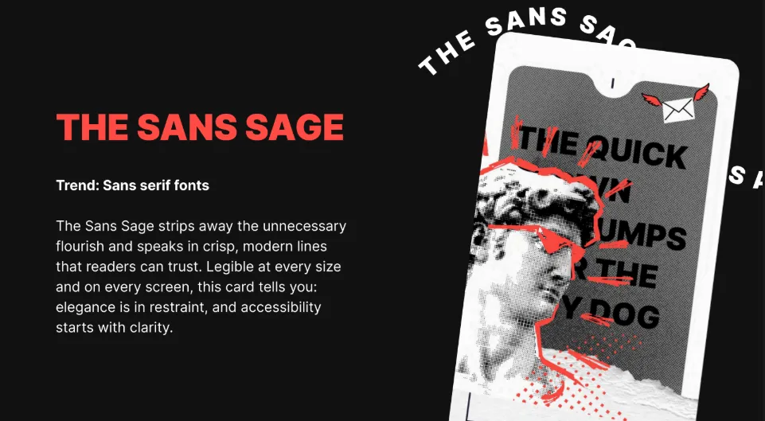
The Sans Sage strips away unnecessary flourishes and speaks in crisp, modern lines readers can trust. Legible at every size and on every screen, this card tells you elegance is in restraint and accessibility starts with clarity. Perhaps unsurprisingly, sans-serif fonts were one of the top design trends in terms of frequency across the examples we examined.
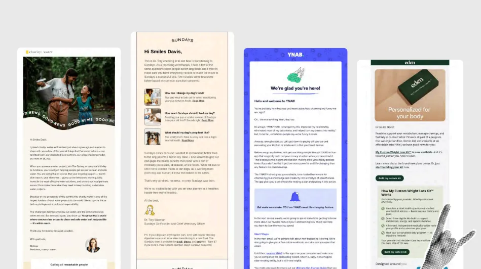
We’ve got some examples on screen—Charity: Water, Some Days, YNAB, Eden—all very solid choices. Let’s talk about accessibility: on its face, how accessible do we think this trend is? Sans-serif fonts in general—what makes them effective or not? On a scale of 1 to 10, where are we?
Paul: I’d probably go for about seven. It’s okay. It’s the easy way to think, “Sans serif equals accessibility.” There are good reasons for choosing sans serif, but it’s not the only consideration. You need to look at the actual characters in the typeface: are they clear and distinctive from one another? That’s really important.
Logan: So it’s less about serif vs. sans serif, and more about whether the individual glyphs are distinctive enough to be easily distinguished. Am I hearing you right?
Paul: Yeah, that definitely comes into play, especially when you think about dyslexia, but also readability in general. Emails are usually scanned, not read like books. Instant recognition is important.
Logan: That’s an excellent point. Instant recognition holds up pretty well in sans serif, depending on the font chosen. As with so many things in email, the short answer is “it depends.” The longer answer is: choose fonts with distinctive character shapes. Mark or Jaina, any thoughts?
Mark: As Paul said, it’s not serif vs. sans serif—it’s about the font itself and the individual. Different people have different preferences. Both serif and sans serif can be good, both can be bad. There’s no such thing as 100% accessible—it’s always a compromise. One font may work for one person and not for another. Cursive is generally bad. Maybe okay sparingly, but usually a poor choice. Personally, I like monospace fonts because the uniformity of spacing makes it easier for me, as someone with dyslexia. It reduces skipped characters. But monospace isn’t common, so it can feel jarring to others. Since I look at code all day, it feels natural to me. Again, different people need different solutions. Testing helps.
Logan: Excellent. And I agree—cursive is bad. My cursive is terrible. I had penmanship lessons as a kid, but it’s all gone. So yes, I should never use cursive in email—for many reasons. The note about monospace helping dyslexic readers is great, since dyslexia is common.
Jaina: In today’s digital age, more platforms and apps use sans serif fonts, so younger generations may be more accustomed to them. Older generations, used to print media, may prefer serif fonts. So you need to consider the target audience’s age group. One more point: all-caps text is harder to read and scan, regardless of serif vs. sans serif, because you lose the visual up-and-down cues in the lettering. Kerning, spacing, and how the font is applied often matter more than the font category itself.
Logan: That’s good. I think we’ve already touched a bit on how this trend could be made more accessible, which is paying attention to the specific type of sans font. It’s not a panacea. It’s not a cure-all just using a sans font. It’s about specifically looking for ones that are easy to take in at a glance, which is also doing a quick parse test on your email. Pull it up on your phone, hold it at arm’s length, and see how much you can make out at a glance. That is one quick way of doing it.
Of course, that plays to your own perceptual bias. So it’s important to engage with folks who have the disabilities you’re trying to reach, to make sure you’re taking them into account as well. That’s why I send all of my emails to Mark to hold out at arm’s length and read and go out from there. That’s good. I think we’ve got some good points here. And then in terms of how to stand out, I think there’s something we can talk about. Here’s an example from New York, not the city but the publication, and they go entirely serif. I’m not telling anyone they should go entirely serif, that’s not it. If you go full serif, it really has to work with your brand. But in terms of pairing serif and sans fonts, that’s something I’ve seen work well. Do you all have any opinions about pairing those?
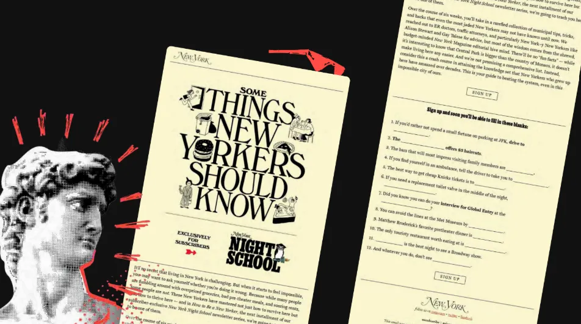
Jaina: I really like it. From a design perspective, using serif fonts for headlines and sans for your body text is strong. You still have to artfully combine two fonts so they work together, because you can’t just pair any old sans with any serif and make it work. There are some pairing websites out there that can help. It can amplify how your headline should be read, and it’s a nice visual change between a headline and body copy. You see a headline and know it’s a headline because it’s in a slightly different font as well as being bigger. There are some visual cues it can offer, too.
Paul: Yeah, that makes sense. How you use spacing around those things matters as well. In the example in front of us, you’ve got various ways of treating text within space. Arguably, the column width, in my opinion, is too wide to be readable. It’s things like that where you can adjust the space around both your font choices, sans and serif, and your font pair to ensure you’ve got the right amount of saliency around a given heading, subheading, and paragraph, so you’re not cramming all your text into one space and making it hard to read. It’s not just the font, but the space that contains it that is important as well.
Logan: Yeah, that makes a lot of sense, Paul. Lovely. Okay, we need to keep moving. Briefly, in terms of the benefits of sans versus serif, we’ve touched on some of these points already. Sans fonts have cleaner, simpler letterforms, and that typically makes them easier to parse quickly. They typically scale well, again depending on the font, so they can stay legible. Where we see serif fonts having more advantages is in longer form print reading, and serifs can help with eye fatigue when going from letter to letter. Alright, moving right along. The next trend we have is the Vision Weaver, or photography-heavy visuals.
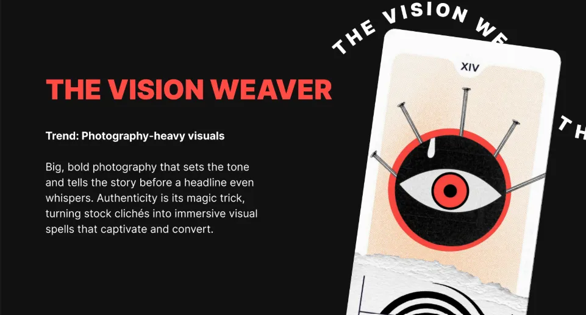
Big, bold photography that sets the tone and tells the story before a headline even whispers. Authenticity is its magic trick, turning stock cliches into immersive visual spells that captivate and convert. Yes, lots of photography. We’re seeing people making heavy use of photography in their emails this year.
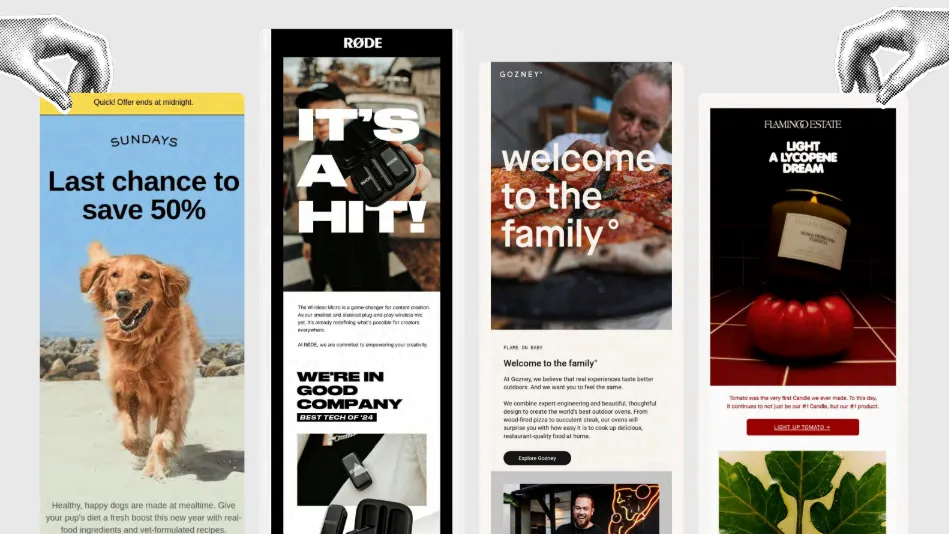
We’ve got some excellent examples here, from Sundays and Road to Gozney, who’s welcoming me to the family, and that feels very lovely. And then a lycopene dream. Jaina, I feel like you are the vegetable expert, but I guess it’s technically a fruit.
Jaina: It is a fruit. And I know nothing about fruits.
Logan: Right. I’m asking the wrong person. I forgot I had the vegetable expert here. So, in terms of photography-heavy visuals, where does using photography make sense, and how could this trend be more accessible? What do you see as the best use of photography?
Paul: Coming back to what we were saying before about how email is read quickly, you can say a lot in an image very quickly. You can communicate a lot about your subject matter and set the scene. You could argue that without accessibility, there’s a myth that photography equals bad. That’s not the case. It’s using it well that matters.
Logan: Yes. It’s not a black-and-white issue where all photography is bad or makes it less accessible. Strong, striking photography isn’t bad. It’s very much how it’s being used. Mark or Jaina, any thoughts?
Mark: I think, as Paul said, there’s a myth that imagery is bad in emails. It often comes from thinking about visually impaired people reading your emails, and if they can’t see the image properly, then that’s not great. But there are also people who communicate better with images, people who struggle with reading, and for them, text is a problem. Visuals really help those users. It’s again about balance. What helps one person can hinder another, so you try to find the balance. When you’re using photography or any images, good alt text is key. Make sure you have appropriate, well-written alt text. Think about why this image is here, why this image and not another. If this image wasn’t in the email, what information would be missing? Ask yourself why you have this image, then derive good alt text from that. Images aren’t bad. They’re great. I love imagery.
Jaina: I’d add that brand accessibility isn’t solely about people with permanent disabilities or something that hinders them day to day. It can also be about temporary needs or environmental constraints. Make something accessible for people who are in areas with really bad internet, whether they’re traveling, on weak Wi-Fi, or just don’t have good connectivity. Big bold images are great, but consider accessibility there, too. How do you optimize the image? How do you make it load quickly? Is there a way you can embed it in the email that helps you, whether that’s slicing it up the old-fashioned way or optimizing it so it’s not a 10-megabyte single image, but something under a meg that loads quickly regardless of the internet access someone has.
Logan: Yes. Those are such good points. There are a number of ways we want to make things more accessible to people, and some of that is technological accessibility. I might touch on this in a later slide. You never want the comprehensibility of your content to be dependent on whether the spotty Wi-Fi in a coffee shop is working. Recently, I was in San Francisco preparing for an event with Naomi West, and we were trying to pull up examples on spotty coffee shop Wi-Fi. It was interesting to see who had alt text and whose emails were really dependent on images to make sense. You want your email to make sense whether or not the images load. That’s a big part of it, and well-written alt text helps a lot. Lovely. In terms of how to stand out, if you want to be a little cheeky and buck the photography trend, you can go with illustrations like this.
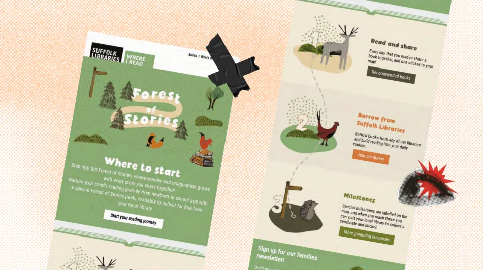
Of course, that’s super brand-dependent. Whether illustrations or iconography, the underlying principle is to quickly convey a feeling. One of the things imagery does well is spark emotion more quickly than text can. And so, for instance, with these, there’s a lovely playfulness to these little animal illustrations, but whether using illustration or photography, you want to make sure it’s prompting people to feel something, because that’s also part of what makes content memorable. If we don’t have any kind of emotional experience of content, we’re unlikely to remember it unless we’re just playing the memorization game. So yes, we touched on these points a bit, but in terms of the use case for photography, it’s probably most effective when it helps subscribers see themselves in the story, showing products in context, sparking emotion like we were talking about, creating desire. It can also break up text nicely, which can make it engaging, and you can take something in at a glance. But you never want the comprehensibility of your content to be reliant on an image loading. You want to use photos to enhance your content, but not contain your content, if that seems reasonable to everybody. Lovely. Moving right along. We’re trucking along here: the Signal Flare, which is bright, saturated CTAs.
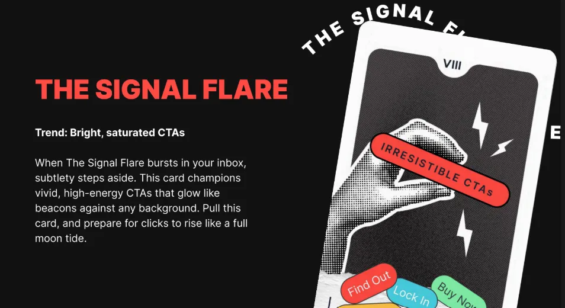
When the Signal Flare bursts in your inbox, subtlety steps aside. This card champions vivid, high-energy CTAs that glow like beacons against any background. Pull this card and prepare for clicks to rise like a full moon tide. So we have some lovely examples here of bright, saturated CTAs that tend to stand out like little neon beacons against these backgrounds here from Section and Stuf Fitness. Some good options here. Let’s dig into this a little bit. For these bright, saturated CTAs, do you all see any downsides? Are there ways we can make this more accessible? Does it all depend, like we almost inevitably answer about any question here?
Jaina: I think Emma Lemon in the chat put it pretty succinctly: she said it immediately looks trash in dark mode, though, which it could well do if you don’t have the right code in there to make sure your emails look good in dark mode. But also, again, I’m kind of banging the same drum in this whole session, if someone is looking at their email at night or in a very dark room and they’re scrolling and scanning through emails, those really bright, saturated CTAs can almost be too bright. Even if you don’t have your screen brightness turned down, it can be a little jarring and a little too bright in some instances. So that might be where those bright CTAs, while you think they’re like a beacon in your email, can be too much of a beacon. It’s like a blinding cyclops flashlight in your eyes.
Logan: Like the LED headlights of the email CTAs. If anybody’s had to drive in front of someone with LED headlights—where are all my astigmatism folks in the chat? Speak up.
Paul: For me, going back to what I said at the beginning about problem solving: CTAs have a purpose, to be used, selected, pressed, clicked, touched—whatever. If you can’t see the color behind it, it’s just going to look like a bit of text, and your visual language, which is your label or your box containing it, arguably disappears because of the low contrast. You’re removing one of the visual cues that communicates “this is a button; press it.” That’s a danger that may show up in performance when you look at click-through rates, because people might not click it if they can’t see it. It’s really important. The other aspect is that some of these examples don’t conform to the content adaptability guidelines from a non-text contrast point of view. So you’ve got to watch that as well. It’s a couple of things.
Mark: Yeah, contrast is really important. Make sure you’ve got good contrast, but you can also have too much contrast, which gives you glare. Again, it’s about balance. The glare can be quite painful. If you have extremely high contrast, picking out text against glaring backgrounds can be very hard to read. You don’t need fluorescent colors to get good contrast. Look at this slide we’re viewing: it’s black and white with a bit of gray and small pops of red. It’s not an overly bright, offensive red; it still draws the eye and pulls out key elements. Also, not everybody sees color the same way. Some people are color-blind, so if you’re relying just on color, it won’t work. As Paul mentioned, having other indicators to identify key points is important.
Logan: Very much so. First, thank you for affirming our RGE red as pleasant and effective for what we’re talking about. Bright and saturated is one way of providing enough contrast so something visually stands out, but it’s not the only way, and you don’t have to go to extremes. One of the most basic starting steps for anyone who wants to make their emails more accessible is using tools and taking the first steps toward accessibility. What are good starter places? Looking at your color contrast is one. There are lots of ways to do this. There are external tools—Contrast Tools is one I like—that not only show whether your contrast meets accessibility guidelines, but also examine it in context with surrounding colors and give deep detail.
Also, in Beefree, we’ve got a feature in our editor called Smart Check that you can run at the end of your email creation. It will point out color contrast issues and make sure they are distinct enough. As we mentioned, dark mode is absolutely a factor. You don’t want to be proud of a bright CTA and then have it look muddy and dingy in dark mode. Test on all fronts. Do you have any parting thoughts on this one?
Mark: The extreme colors are the ones that really mess up in forced dark mode. If you’re pushing fluorescent colors, those are going to look the worst. If you keep things a little more subtle, they tend to invert better. We don’t always have control over dark mode, so when we don’t have control, using subtler colors can help.
Jaina: I understand the need to draw attention to your call to action because that’s what you want people to do. You want people to click that button. But making it super bright neon is a bit of a lazy tactic. You’ve got to get people to want to click the CTA, not just because it’s bright and neon. I’m always a little cynical when I see those neon buttons. I’m not going to click just because you’re bright and pink. I’m going to read the whole email and make an informed decision instead.
Logan: I mean, this does explain a lot about when I was first trying to befriend you, Jaina. I was flashing a lot of bright signs and wearing a lot of bright clothing, but instead, you waited and did your research.
Jaina: Yeah.
Logan: It’s always tricky marketing to marketers. Marketing to marketers is a tough gig. Well, in terms of how to stand out, you don’t have to go bright.
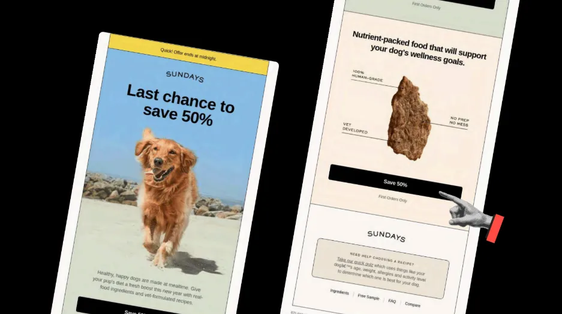
Well, in terms of how to stand out, you don’t have to go bright. This is a great example from Sundays, which—fun fact—we ran through our Beefree Smart Check and it came out perfectly. They made no mistakes.They made no mistakes. Just a nice black-and-cream or black-and-white palette can really stand out, especially when you’ve got brighter colors around and in the background. And it also doesn’t hurt to have a picture of a dog. If you can combine a reasonably colored CTA with a picture of your dog—again, that’s brand specific—that could help with the conversion rate. Also, for folks in the chat asking about answering questions in the Q&A: we will. I’m making sure we move through the content so we can address those at the end. Appreciate everyone’s patience. We will get to those questions.
Bright CTAs can grab attention and help with hierarchy, but as Jaina mentioned, they can feel a little pushy. They can also pose color-contrast accessibility challenges or lose impact with overuse. If you’re going to use bright CTAs, use them strategically and ask whether they need to be that bright. Moving on to the Rounded Realm, the next trend is rounded modular layouts.
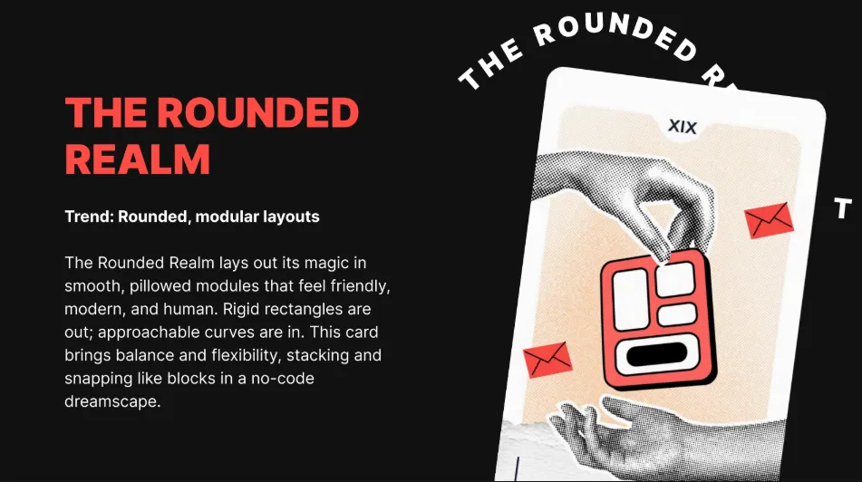
The Rounded Realm lays out its magic in smooth, pillowed modules that feel friendly, modern, and human. Rigid rectangles are out. Approachable curves are in. This card brings balance and flexibility, stacking and snapping like blocks in a no-code dreamscape. Let’s look at some examples for rounded modular layouts. I see this a lot with SaaS companies.
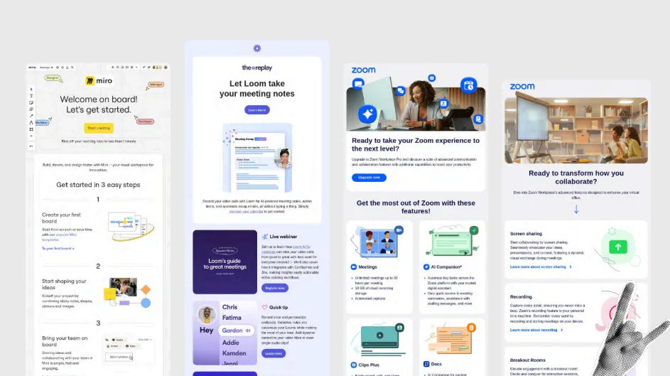
This is a particular trend I notice—sub-trends too. In another presentation, I’ve noted Loom in particular: they’ve never met a corner they didn’t want to round off. They want everything child-safe and approachable. Miro and Zoom are up there as well. Let’s think about this. Rounded modular layouts: where do these elements not work? What makes them effective? How can we make this more accessible? Thoughts, feelings, compunctions?
Mark: I think, again, we can think about the visual language here. Rounded corners are nice, and they do soften things. It feels more gentle and welcoming. But if every corner is rounded, then we lose some contrast. If you have all your rounded corners on your CTA so it’s like “rounded means clickable,” but then you have something else that’s rounded and not clickable, that’s slightly confusing. I’m not saying don’t do that, but that’s one element that can come into it. So, having clarity of the visual language is important. Sometimes a full-width CTA with square corners reads like a heading bar rather than a button — especially if spacing and other affordances are weak. It depends on what’s around it. If there’s a clear break after it, then it’s more obvious that it’s a link, but if not, it can look like a heading. And also with rounded corners, how are you coding them? What is going on there? Are you using VML? In that case, that is horrendous for accessibility, so just scrap it. Get rid of all your VML.
Logan: And what would be the way you would recommend for folks to round their corners?
Mark: Use border-radius. It’s not going to work in Outlook. It’s not going to work in Web.de or GMX. And I don’t care. I can still click on the link. That’s the important thing. I can still click on the link at night, buy your products, give you money, and convert on your website. That’s more important than having rounded corners in Outlook.
Logan: So we want to make sure—Paul and Jaina, give me just a second here—but for one, I need some shoutouts or emoji responses in the chat if you’ve ever been victimized by a rounded element in the email that wasn’t clickable and wasn’t actually a CTA, because I’ve absolutely clicked on those without realizing it. But also, overall, what I’m getting from you, Mark, is not to get too emotionally attached to rounded corners, because they won’t show up everywhere. It’s good to know what elements of an email we can and can’t get emotionally attached to. That seems important.
Mark: Get emotional about VML.
Paul: I think it’s about considering all your elements in your email design system. If you’ve got small elements like a pill, just a little element that will almost flag an inception or something like that, if you’re going to have that with round corners and then you have rounded corners elsewhere, don’t do that, because you’re likely to confuse recipients as they load on that day. Is it a button? No, it isn’t. That’s frustrating. So there’s that holistic view of what all your elements do and the role they play.
Taking it beyond that, once you get out of the email, what is the visual language a recipient sees on the website or app? Is it the same? Are they going from rounded to square? From a holistic brand point of view, are you suddenly changing the visual language for them? You need to think about the wider view outside the email as well to make sure there’s consistency as they go through a journey, and not just isolate the email itself.
Jaina: Paul stole the words right out of my mouth about that visual journey. I should have jumped in there. I agree with everything Paul said about the visual journey, because it’s jarring when you go from an email with beautiful round corners, and then you go to the website, and it feels like a completely different brand with those tiny changes. Also, what you said, Logan, previously, about holding your email far away and almost squinting to see visually what it looks like with all these rounded boxes everywhere. One of the emails on the previous slide had everything so rounded, all the sections with little rounded boxes. When you squint and look away, can you still tell what’s what and what’s really important on that email? I think that’s the critical bit there. But I do love a good rounded image here and there.
Logan: It’s true. We do have someone noting in the chat—and it feels worth addressing—that obviously nobody is designing emails in a vacuum outside of the brand. There are brand guidelines you have to adhere to, and some may say you have to round all the corners. But it might be worth starting a conversation with the folks who created those guidelines and asking: Is that having the effect we want? Does it make our visual hierarchy distinctive enough? Working with email is working within constraints. It’s writing a poem, a haiku, sometimes a limerick. You have to adhere to strict constraints, both to meet email client needs and your own brand needs. We want to recognize and honor that.
Jaina: There’s a balance you have to strike, too. Email as a medium is different from your website as a medium, and your brand design guidelines need to be flexible for both. That’s down to the people at the organization and how they feel about that. They are intrinsically two different channels, two different media. They will need separate considerations when it comes to design and even accessibility.
Logan: Yep, that makes a lot of sense. Alright, if you want to stand out, you could go with all tiny boxes.
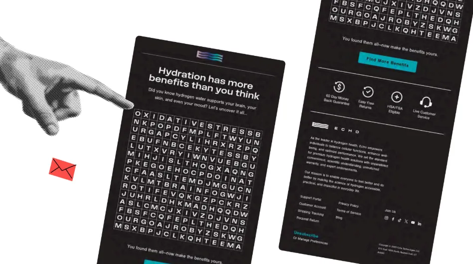
Alright, if you want to stand out, you could go with all tiny boxes. I think that’s one way you could stand out. Just to be clear for everybody on the job: this is a joke. I just thought it was amusing to put in. If you don’t want any rounded corners, then do this, which is a boggling word search, although if anybody really wants to spend some time on it.
I’ll tell you up front, Paul, it gets really small on mobile. So you don’t have to adhere to the round, but the underlying principle is that you want to make sure your content is easy to scan. If you have too many of the same shapes around elements, that’s going to be more difficult. All three of you spoke to this. We want to make sure that’s true. Round corners also help push content to the center more, forcing more negative space. Think about that. And you were talking about this with fonts as well, Paul. It’s not just the text but the space around it. In the same way, we want to make sure everything is visually distinctive in the email and clearly scannable. If we have too many of the same shapes, do we lose out on those things?
Alright, trucking right along here. You all heard me mention Smart Check earlier. This is a feature we have in Beefree. There are many great tools, and I’m sure some will be dropped in chat. There will also be resources in the resource tab on the right. In Beefree, we have this Smart Check feature that scans your email design for common issues.
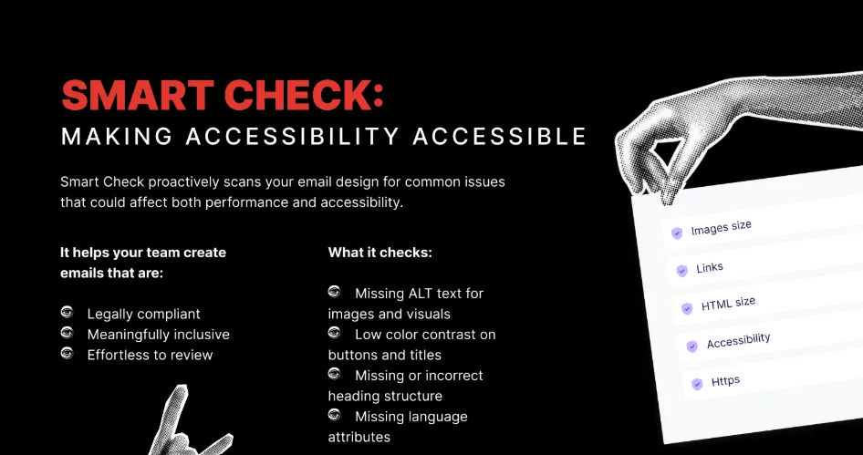
It helps identify missing alt text for images and visuals. The lycopene or opine—the tomato candles we had earlier, for instance—we ran those through Smart Check, and it said “tomato candle” behind each image, which you might want to make more descriptive. It also notes low color contrast on buttons and titles. It points out missing or incorrect heading structure. One of the other example emails had an H1 but never used the H1, and just kept resizing H2. We want semantic markup in emails because screen readers rely on it to prioritize which text should be the headline. It also flags missing language attributes. So, a quick and easy tool if you’re a Beefree user.
Paul, you’ve got a new service you’re providing. Could you talk a little about that?
Paul: Yeah. Early this year, I launched something called In12. I realized how challenging it is to get a piece of email content through content accessibility guidelines. So I came up with a 12-stage process for doing that, helping people one stage at a time, a fully step-by-step guide.
Logan: Lovely. That’s great. And Mark, you’re also in the Email Markup Consortium, which is a great organization, and you all have an accessibility report, right?
Mark: We do annual accessibility reports. We scan emails we collect from a separate project into our email data collection. We collect all these emails and run them through the accessibility checker, which is the Parcel Accessibility Checker, the one I work on, and test them for emails. The good news is that 98.89% failed, out of about 400,000 emails. So there’s a lot of opportunity for improvement when everybody is failing so badly. It’s definitely a good resource to see the common issues people are hitting and to check if you’re hitting those in your emails.
Logan: A good reminder that no one’s doing it perfectly, and that accessibility is a practice—an incremental practice—and not a destination, right? That’s absolutely the point.
Mark: Yeah, yeah. Keep improving. Although the overall results are quite bad, year over year, we are seeing improvements if you look at individual tests across that. So that is promising. Also on the promising side, we just heard from Proton Mail that they’ve done a load of accessibility updates to their email client, so now they support more accessibility features. They were, I’m not sure, mid-table towards the lower end of the rankings, and now they’re top three. So that’s big. Shout. We’ve got a blog post coming out about that soon.
Logan: We love that. And then, Jaina, of course, people can find you at jainamistry.com if they want to engage with you, but you’ve also got a podcast coming out—or that you’re developing—as well?
Jaina: Yes, I am developing it at the moment. It is called “No Stupid Questions, Just Marketing Ones” and I am answering all those questions that email marketers do not know who to turn to to ask. You can submit them anonymously. I will be inviting some guests to help me answer some of those questions. But yes, I’m trying to do this podcast thing.
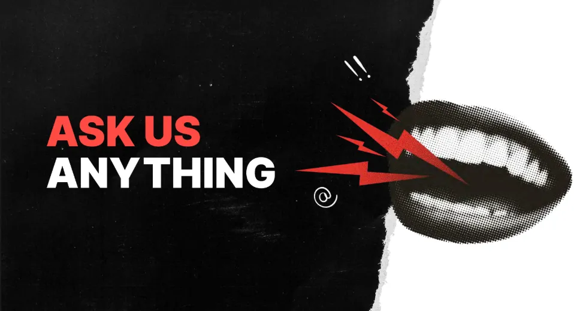
Logan: Well, speaking of questions, we have some fantastic questions in the Q&A area, and we’re going to jump into those now. For folks joining us, we may run a little bit over time. This will all be included in the recap. If people have to drop out right at the hour, we definitely understand, but we’re going to spend a little bit of extra time making sure that we get into some of these questions.
The top question by a good bit is: what’s the single biggest change in email design since AI became mainstream? I’m curious what you all think about that. What’s your opinion?
Jaina: Has AI gone mainstream for email specifically is the one question I’m answering with a question. Yeah, because I’m wondering if it’s to do with AI summaries. You’ve got Gemini summarizing emails and things like that. I don’t know whether I’ve personally noticed anything that senders are doing in my own inbox to speak to how AI is changing email design. Top-loading, front-loading, making sure your headlines, your calls to action, and your preview text mention pertinent things. But again, I don’t know. I think it’s too early to say.
Paul: I’d agree with Jane. I really think it’s early days, but that doesn’t mean we’re not going to see further changes. The impact is clearly with summaries at the moment, that kind of thing. To give you an idea—and interestingly enough—where does that pull from? It pulls from the HTML text content within your email. So don’t do all-image; otherwise, there would be nothing to pull from your email in that. I kind of think it’s a bit like SEO for email. So it is a bit early yet. We’ll see. But I certainly wouldn’t ignore it.
Mark: Yeah. AI is a tool; it’s a useful tool. A lot of people are using it for generating text content and for generating images. It’s useful, but if you’re using it properly, you should be checking everything before it goes out. You shouldn’t be able to see that something’s built with AI, because there are a lot of telltale things—this is wrong, this is incorrect, there’s a mistake here or there. Everything that’s created with AI should be checked before it’s released.
Logan: It’s true. Maybe another round of emoji responses in chat for anybody who has received a message that you clearly know is written by AI, and without a lot of editing. That absolutely happens. Yeah, I’ll chime in here as well. I see AI thus far as being less impactful on the design end of things—more on the content. All of us who are sending emails usually have to create multiple iterations to some degree. I had to create copy for this webinar for the landing page and for each of the emails that went out. So I wrote a brief, I wrote a draft for the landing page, and then I used AI to iterate those into different things and spent time tweaking and changing the language and making sure it was consistent. As far as easy iteration, it was helpful from that side of things.
Alright, moving right along with the questions. From Samantha Roller: For longer emails, are there specific design aspects that keep a customer engaged? Are shorter-form emails the best option? It always depends on the content.
Mark: Does it depend? Is it, yeah, it depends on the brand. It depends on the content. If you’ve got a lot of content, does it really all need to go in the email? Sometimes, yes, but often no. Often you can give a teaser and then take people to your page, to your landing page, to give them more information. I’m a big fan of interactive email, and you can break content down like that. Use tab layouts and things like that to reduce the overall length so people can focus on what they are interested in and not have to read through every piece of it. You can have an accordion or tabs so you can open only certain parts. From an accessibility point of view, that’s not great. There are improvements coming with the new CSS Overflow spec, which will help, but there are still issues.
Jaina: If you’re sending long-form newsletters, for example, and you want the entire newsletter to be in the email, it is going to be a big long block of text. Adopting some of the visual cues you see on blog posts can be a really good way of breaking up those big blocks. You see newsletters use a pull quote or an image or something that breaks it up a little. That can always help with keeping it scannable and readable. For those newsletters, you want all of your content in the email, so look at how people make their blog posts look great.
Paul: I think the other part, as Mark said, is asking whether it all has to go in the email. That is definitely the first question to ask. If it does, then as Jaina says, break it down. The next thing is to look at how long your paragraphs are. Do not have really long paragraphs. Write shorter paragraphs so there is space around them and they are easier to digest. Use headings. Headings are key for accessibility because they allow scanning, whether you are using a screen reader or not. You can scan visually or audibly. Using headings to signpost each section brings a lot of value and makes things easier to digest in longer emails.
Logan: Using the term digest makes me think of one of my favorite analogies for this, and forgive me if you have heard this from me before: for an email, you want it to be a tasting menu, not a party sub. A party sub is a concept I had to explain to my Italian colleagues; it is not a thing in Italy. You want those headlines, you want small bites that are distinctive, with enough space around those small bites of content for people to digest them easily. You do not want to feed them one long paragraph of text, especially with their gluten allergy. You do not want to do that.
Alright, here's a question from Pete Butler: email design can feel really constrained sometimes. Are animated GIFs still considered a good way of adding some joy to emails, or are there better options?
Mark: I think GIFs are good. You can use them to draw attention, but as we said earlier, do not have your flashing GIFs pointing to your CTA. It is distracting. There are accessibility concerns with GIFs, including frame rate and flashing too much. They can be very distracting and make it harder to read the rest of the content, but if used subtly, they can be good. Also, think about how long the GIF plays, or putting breaks in it. It could play a little bit and then have a long break. You can set GIFs to have a 30-second pause after they play if you want to help with that, or you can have a GIF that stops after three plays. That can help improve accessibility as well.
Logan: Yeah, that is an excellent point. Anything that moves will draw the eye. In terms of the last question, subtle, small animated GIFs can be a way of drawing the eye downward through content. That can be a thing. But think about the accessibility concerns, and it will not display everywhere. Outlook, for instance. If you are B2B, you cannot depend on those things, sadly. We do recommend looking at animated GIFs for yourself for joy, just for yourself. If you have to send a lot of emails in Outlook, that is fine.
From Lauren Apostol: how important is it to not have picture-only emails with alt text added?
Mark: Very, very important. If there are only images, it is not going to load for some people. You are going to lose the hierarchy of the text. Anybody using a screen reader will not be able to navigate it as cleanly as if you have a semantic hierarchy. What is a heading, what is a link, what is a paragraph? With alt text, a screen reader generally reads the whole alt attribute, whereas with a paragraph, you can pause, go back, read a specific word, or get a word spelled out. There are lots of advantages there. In terms of scaling, if images scale up when someone zooms because of a visual impairment, the images blur. Text in images cannot be translated. You cannot highlight text and look up a word you do not know. There are so many issues when text is in images. If all the content is in images, it is bad.
Jaina: Going back to AI and people using AI to summarize emails: if all your text is in an image and someone uses AI to summarize the email, they will not get anything out of it. That is another reason to avoid text in images.
Logan: Alright. I think that speaks to it clearly. It is important not to do that. Perhaps a related question: Camilla asks, what is the best way to add GIFs to an email without making the email too heavy or slow to load? A lot of it is just image optimization. That is absolutely the case.
Jaina: There is a tool called ezgif.com. As a non-designer and non-coder, it is a website I found easy to use to optimize my GIFs and remove certain frames so it is under a certain size.
Paul: If you are going to use GIFs, be selective and purposeful. Use them to solve a problem, for a reason. Is it going to add value? What is the email going to communicate if the image is not there? Do not rely on the image to communicate on its own. You need text to support it. I would lean toward the workout guidelines of a five-second limit on GIFs. If you are going to do that, it needs to be toward the top of your email; otherwise, it will stop playing by the time someone scrolls down a long email. Think about that as well.
Mark: In terms of file sizes, one important thing to look at, which is often overlooked, is the total size of all your images in the email. Having one large image and a few small ones is fine. It is better than having hundreds of medium-sized images. Many people overlook the total download size.
Logan: These have been some great questions. I understand there are a lot more. We got a lot of questions. I am sorry we are not able to address all of them today, but we want to be respectful of everyone’s time. We are so grateful for your time with us today and for choosing to spend this time with us. The chat has been going on. We love to see an engaged chat. I am very grateful to all of you.
If you are not a Beefree user and you are curious to learn more about what we do, and maybe want to check out that Smart Check feature, we have a free Business trial you can get into. That also includes a discount if you do that before October 15. If you are a Beefree user, you can still upgrade and try it out.
Thank you all so much for taking the time to hang out with me. Thank you to all of you in the chat. Alright, goodbye for now. Bye.
Main takeaways:
To wrap up, these are the design lessons that matter most:
- Serif vs sans is not the question. Distinctive letterforms and real readability matter.
- Use images with purpose. Add specific alt text and optimize weight so the content still makes sense offline.
- Bright CTAs work only with proper contrast and dark mode resilience, and without glare.
- Rounded layouts can help, but keep a consistent visual language so clickable elements are obvious.
- Avoid image-only emails. Use semantic headings, real text, and a clear hierarchy.
- Test and automate checks for contrast, alt text, heading order, and language. Practice beats theory.